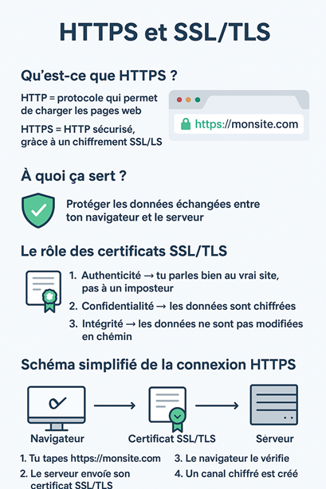

Chapitre IV : HTTPS et SSL/TLS
🔐 1. Qu’est-ce que HTTPS ?
- HTTP = protocole qui permet de charger les pages web
- HTTPS = HTTP sécurisé, grâce à un chiffrement SSL/TLS
👉 Quand tu vois le petit cadenas 🔒 dans ton navigateur, c’est que la connexion est protégée
📖 2. À quoi ça sert ?
- Protéger les données échangées entre ton navigateur et le serveur
- Exemple : sans HTTPS, tes mots de passe ou infos bancaires peuvent être interceptés
- Avec HTTPS, tout est chiffré (illisible si quelqu’un intercepte le trafic)
🗝️ 3. Le rôle des certificats SSL/TLS
- Le serveur possède un certificat numérique (comme une carte d’identité)
- Il prouve :
- 1. Authenticité → tu parles bien au vrai site, pas à un imposteur
- 2. Confidentialité → les données sont chiffrées
- 3. Intégrité → les données ne sont pas modifiées en chemin
👉 Exemple : Let’s Encrypt fournit gratuitement des certificats SSL
🔄 4. Schéma simplifié de la connexion HTTPS
- Tu tapes https://monsite.com
- Le serveur envoie son certificat SSL/TLS
- Le navigateur le vérifie
- Un canal chiffré est créé
- Les échanges sont sécurisés
📡 Exemple concret
- Une boutique en ligne sans HTTPS ❌ : risque énorme de vol de données
- Une boutique avec HTTPS ✅ : données bancaires protégées par chiffrement

TLS / SSL
🔑 1. C’est quoi TLS / SSL ?
- SSL (Secure Sockets Layer) = ancien protocole de sécurisation des communications
- TLS (Transport Layer Security) = version moderne, plus sûre
👉 Aujourd’hui, quand on parle de certificat SSL, en réalité on utilise TLS
🌍 2. Le rôle principal
- Chiffrer 🔐 les échanges entre ton navigateur et le serveur
- Garantir :
- Confidentialité → personne ne peut lire les données échangées
- Intégrité → les données ne sont pas modifiées en chemin
- Authenticité → tu es sûr de parler au bon serveur (et pas à un pirate)
📖 3. Analogie simple
📌 4. Signes visibles
- http:// ❌ → non sécurisé
- https:// ✅ → sécurisé avec TLS
- Petit cadenas dans la barre du navigateur 🔒
📡 5. Exemple concret

Retour au sommaire